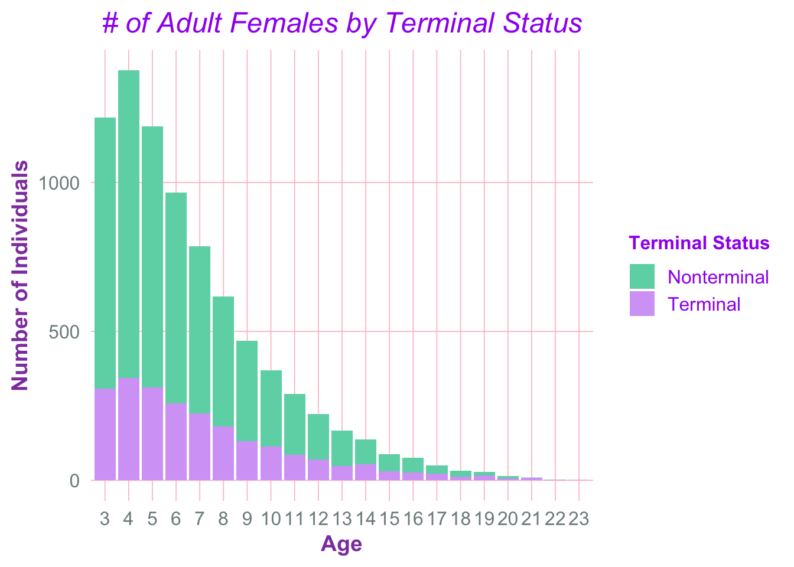
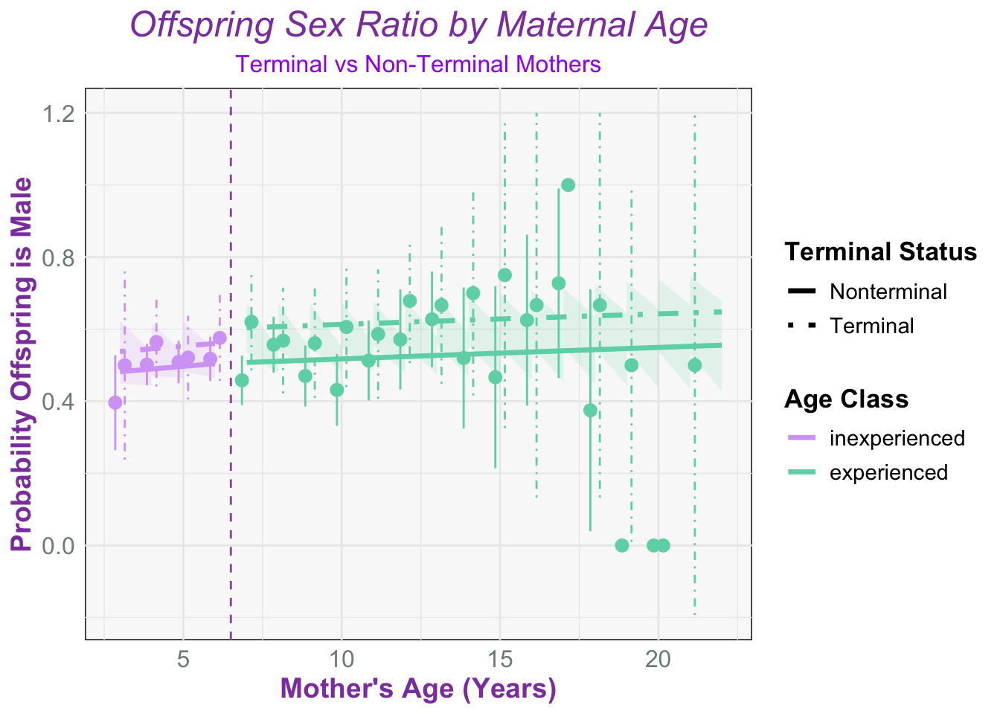

Studying Terminal Effects in Northern Elephant Seals
Downloading the Data and Libraries
Modified Datasets
Adult Female Population Figure

In some species terminal investment shows only in early years of reproduction, or during prime ages for breeding but often not in older ages due to senescence
Lactation Duration Model and Figures
My plan for this is to attempt to calculate lactation duration using the whole database by
1.) Modify the data set to only contain females so when “obssex” = “F” during the breeding season so when timeofyear = breeding
2.) Then contain only adult females observed with a pup
3.) Then calculation lactation duration using earliest date when “withpup” = 1 and then latest date when “withpup” = 1
Lactation Duration Model with Bayesian Stats
Wean Weight Model and Figure
Linear mixed model fit by REML. t-tests use Satterthwaite's method [
lmerModLmerTest]
Formula: Wt ~ age10 + age10:ageclass + terminal:ageclass + (1 | year) +
(1 | animalID)
Data: wt_dat
REML criterion at convergence: 13704.5
Scaled residuals:
Min 1Q Median 3Q Max
-5.8214 -0.4607 0.0286 0.5082 4.6978
Random effects:
Groups Name Variance Std.Dev.
animalID (Intercept) 95.44 9.769
year (Intercept) 52.67 7.257
Residual 230.00 15.166
Number of obs: 1595, groups: animalID, 779; year, 42
Fixed effects:
Estimate Std. Error df t value Pr(>|t|)
(Intercept) 122.173 1.465 47.188 83.390 < 2e-16
age10 5.900 2.031 1565.862 2.905 0.00372
age10:ageclassinexperienced 104.626 6.697 1521.741 15.622 < 2e-16
ageclassexperienced:terminal 1.138 1.547 1483.894 0.736 0.46197
ageclassinexperienced:terminal -2.123 1.601 1515.312 -1.327 0.18485
(Intercept) ***
age10 **
age10:ageclassinexperienced ***
ageclassexperienced:terminal
ageclassinexperienced:terminal
---
Signif. codes: 0 '***' 0.001 '**' 0.01 '*' 0.05 '.' 0.1 ' ' 1
Correlation of Fixed Effects:
(Intr) age10 ag10:g agclssx:
age10 -0.285
ag10:gclssn 0.386 -0.606
agclssxprn: -0.074 -0.297 0.020
agclssnxpr: -0.153 0.122 -0.001 0.032
Sex Ratios Model and Figure
We hypothesize that young terminal moms will have a higher chance of giving birth to a male offspring sex ratio than non terminal moms. Whereas old terminal moms will produce less males compared to non terminal moms
Generalized linear mixed model fit by maximum likelihood (Laplace
Approximation) [glmerMod]
Family: binomial ( logit )
Formula: is_male ~ age10 + age10:ageclass + terminal:ageclass + (1 | year_fct)
Data: sex_dat
AIC BIC logLik deviance df.resid
3053.7 3087.9 -1520.8 3041.7 2202
Scaled residuals:
Min 1Q Median 3Q Max
-1.4117 -1.0123 0.7786 0.9713 1.1167
Random effects:
Groups Name Variance Std.Dev.
year_fct (Intercept) 0.02627 0.1621
Number of obs: 2208, groups: year_fct, 47
Fixed effects:
Estimate Std. Error z value Pr(>|z|)
(Intercept) 0.01497 0.07956 0.188 0.85078
age10 0.12900 0.18759 0.688 0.49166
age10:ageclassinexperienced 0.16058 0.66737 0.241 0.80986
ageclassexperienced:terminal 0.38735 0.14318 2.705 0.00682 **
ageclassinexperienced:terminal 0.22486 0.15190 1.480 0.13879
---
Signif. codes: 0 '***' 0.001 '**' 0.01 '*' 0.05 '.' 0.1 ' ' 1
Correlation of Fixed Effects:
(Intr) age10 ag10:g agclssx:
age10 -0.598
ag10:gclssn 0.676 -0.619
agclssxprn: -0.176 -0.210 -0.039
agclssnxpr: -0.219 0.145 0.049 0.060

Attempting Brms Wean Weight
Source Code
---title: "Studying Terminal Effects in Northern Elephant Seals"format: html: echo: false fig-width: 7 fig-height: 5 code-fold: true code-tools: true warning: false toc: trueeditor: visual---# Downloading the Data and Libraries```{r}#| label: setup#Libraries: library (tidyverse)library (dplyr)library (ggplot2)library (lme4)library (brms)library (ggeffects)library (tidybayes)library (rstan)#Initial Data Pullsealdat <-read_csv(here::here("data/Adrien Data Pull 2024_12_06.csv"), show_col_types =FALSE)```# Modified Datasets```{r}#Bioage cleanbioseal <- sealdat %>%filter(observed ==1, tagsex =="F") %>%group_by(animalID) %>%mutate(age = year - yearborn, max_age =max(age), bio_age = max_age - age, terminal =ifelse(bio_age ==0, 1, 0),firstobsbreed =as.Date(firstobsbreed, format ="%Y-%m-%d"), lastobsbreed =as.Date(lastobsbreed, format ="%Y-%m-%d"), lactation_duration =as.numeric(difftime(lastobsbreed, firstobsbreed, units ="days"))) %>%filter(age >2)```# Adult Female Population Figure```{r}#Create terminal to be a factor here pop_breed <- bioseal %>%group_by(age, terminal) %>%summarise(n =n(), .groups ="drop") %>%mutate(terminal_fct =factor(terminal, labels =c("Nonterminal", "Terminal")))#Figure with age distribution with terminal as a factor to create a stacked barplotpop_fig <-ggplot(pop_breed, aes(x =factor(age), y = n, fill = terminal_fct)) +geom_col() +labs(x ="Age",y ="Number of Individuals",fill ="Terminal Status",title ="# of Adult Females by Terminal Status" ) +theme_minimal(base_size =15) +theme(panel.grid.major =element_line(color ="pink", linewidth =0.3), panel.grid.minor =element_blank(), axis.title.x =element_text(color ="#8E44AD", size =14, face ="bold"), axis.title.y =element_text(color ="#8E44AD", size =14, face ="bold"),axis.text.x =element_text(color ="#7F8C8D", size =12), axis.text.y =element_text(color ="#7F8C8D", size =12),plot.title =element_text(hjust =0.5, size =18, face ="italic", color ="purple"), legend.title =element_text(size =12, face ="bold", color ="purple"),legend.text =element_text(size =12, color ="purple") ) +scale_fill_manual(values =c("Nonterminal"="#6DD5B3", "Terminal"="#D5A6F6"))print(pop_fig)```In some species terminal investment shows only in early years of reproduction, or during prime ages for breeding but often not in older ages due to senescence# Lactation Duration Model and FiguresMy plan for this is to attempt to calculate lactation duration using the whole database by1.) Modify the data set to only contain females so when "obssex" = "F" during the breeding season so when timeofyear = breeding2.) Then contain only adult females observed with a pup3.) Then calculation lactation duration using earliest date when "withpup" = 1 and then latest date when "withpup" = 1```{r}resight <-read_csv(here::here("data/raw/fullresights.csv")) %>%filter(obssex =="F"& timeofyear =="Breeding") %>%rename(year = calyear) %>%group_by(animalID) %>%mutate(age = year - yearborn,max_age =max(age, na.rm =TRUE),bio_age = max_age - age,terminal =ifelse(bio_age ==0, 1, 0) ) %>%filter(age >2) %>%ungroup()#To create lactation duration were gonna just make another object in the environment:lact_info <- resight %>%filter(withpup ==1) %>%group_by(animalID, season, age, max_age, bio_age, terminal) %>%summarise(lact_start =min(date, na.rm =TRUE),lact_end =max(date, na.rm =TRUE), lact_dur =as.numeric(lact_end - lact_start),.groups ="drop" ) %>%filter(lact_dur >0)maturity <-6lact_dat2 <- lact_info %>% dplyr::select(animalID, bio_age, lact_dur, season, terminal, age) %>%mutate( ageclass =ifelse(age <= maturity, "inexperienced", "experienced"),age10 = (age - maturity) /10, year_fct =factor(season))lact_dat2 <- lact_dat2 %>%distinct(animalID, season, .keep_all =TRUE)```## Lactation Duration Model with Bayesian Stats```{r}#Brm model for lac dur# lac_brm <- brm(# lact_dur ~ age10 + age10:ageclass + terminal:ageclass + (1 | season),# data = lact_dat2,# family = negbinomial()# )# summary(lac_brm)# # # Prediction grid# lac_grid2 <- tidyr::expand_grid(# age = 3:22,# terminal = 0:1# ) %>%# mutate(# age10 = (age - maturity) / 10,# ageclass = ifelse(age <= maturity, "inexperienced", "experienced"),# ageclass = factor(ageclass, levels = c("inexperienced","experienced")),# terminal_fct = factor(terminal, labels = c("Nonterminal","Terminal"))# )# # # Population-level predictions (exclude random effects), with 95% CrI# pred_df <- fitted(# lac_brm,# newdata = lac_grid2,# re_formula = NA,# summary = TRUE,# probs = c(0.025, 0.975)# ) %>% as_tibble()# # lac_pred_pop2 <- bind_cols(lac_grid2, pred_df) %>%# rename(# predicted = Estimate,# lwr = Q2.5,# upr = Q97.5# )# # # # Raw-data summaries # lact_summ2 <- lact_dat2 %>%# mutate(terminal_fct = factor(terminal, labels = c("Nonterminal","Terminal"))) %>%# group_by(age, terminal_fct, ageclass) %>%# summarize(# mean_lact = mean(lact_dur),# se_lact = sd(lact_dur) / sqrt(n()),# .groups = "drop"# ) %>%# mutate(age = age + 0.15 * ifelse(terminal_fct == "Terminal", 1, -1))# # # Full plot (posterior mean + 95% CrI ribbon) (hopefully..)# lac_plot2 <- ggplot(lac_pred_pop2, aes(x = age, y = predicted)) +# geom_ribbon(# aes(ymin = lwr, ymax = upr,# fill = ageclass,# group = interaction(ageclass, terminal_fct)), # <-- key# alpha = 0.20, show.legend = TRUE# ) +# geom_line(# aes(linetype = terminal_fct, color = ageclass,# group = interaction(ageclass, terminal_fct)),# linewidth = 1.2# ) +# geom_pointrange(# data = lact_summ2,# aes(# y = mean_lact,# ymin = mean_lact - 1.96 * se_lact,# ymax = mean_lact + 1.96 * se_lact,# color = ageclass,# linetype = terminal_fct# ),# show.legend = FALSE# ) +# geom_vline(xintercept = maturity + 0.5, linetype = "dashed", color = "#9B59B6") +# # # styling# theme_minimal() +# theme(# panel.background = element_rect(fill = "#F9F9F9", color = NA),# axis.title.x = element_text(color = "#8E44AD", size = 14, face = "bold"),# axis.title.y = element_text(color = "#8E44AD", size = 14, face = "bold"),# axis.text.x = element_text(color = "#7F8C8D", size = 12),# axis.text.y = element_text(color = "#7F8C8D", size = 12),# plot.title = element_text(hjust = 0.5, size = 18, face = "italic", color = "#8E44AD"),# legend.title = element_text(size = 13, face = "bold"),# legend.text = element_text(size = 11)# ) +# labs(# title = "Effect of Age on Lactation Duration",# x = "Mother's Age (Years)",# y = "Lactation Duration (days)",# color = "Age Class",# fill = "Age Class",# linetype = "Terminal Status"# ) +# scale_linetype_manual(values = c("Nonterminal" = "solid", "Terminal" = "dotdash")) +# scale_color_manual(values = c("#D5A6F6", "#6DD5B3")) +# scale_fill_manual(values = c("#D5A6F6", "#6DD5B3"))# # print(lac_plot2)```# Wean Weight Model and Figure```{r}library(segmented)library(lmerTest)#Wean Weight Time!wt_dat <- bioseal %>% dplyr::select(animalID, bio_age, lactation_duration, year, pupsex, Wt, age) %>%filter(!is.na(Wt))%>%mutate(terminal =ifelse(bio_age ==0, 1, 0), ageclass =ifelse(age <= maturity, "inexperienced", "experienced"),age10 = (age - maturity) /10, year_fct =factor(year))#Hist was evenly distributed: using glmer because of this:wt_mod <-lmer( Wt ~ age10 + age10:ageclass + terminal:ageclass + (1| year) + (1| animalID), data = wt_dat, )summary(wt_mod)#Create our grid for prediction metrics wt_grid <-expand_grid(age =3:22, terminal =0:1) %>%mutate(age10 = (age - maturity) /10, ageclass =ifelse(age <= maturity, "inexperienced", "experienced"))#create population predictions wt_pred_pop <- wt_grid %>%mutate(predicted =predict(wt_mod, newdata = wt_grid, re.form =NA, type ="response"),terminal_fct =factor(terminal, labels =c("Nonterminal", "Terminal")))#Now summarywt_summ <- wt_dat %>%ungroup() %>%mutate(terminal_fct =factor(terminal, labels =c("Nonterminal", "Terminal"))) %>%group_by(age, terminal_fct, ageclass) %>%summarize(mean_wt =mean(Wt, na.rm =TRUE), se_wt =sd(Wt, na.rm =TRUE) /sqrt(n()), .groups ="drop" ) %>%mutate(age = age +0.15*ifelse(terminal_fct =="Terminal", 1, -1))#Figure time! wt_fig <-ggplot(wt_pred_pop, aes(x = age, y = predicted)) +# Pointrange with dashed error bars based on terminal statusgeom_pointrange(data = wt_summ,aes(y = mean_wt, ymin = mean_wt -1.96* se_wt, ymax = mean_wt +1.96* se_wt, linetype = terminal_fct,color = ageclass ),show.legend =FALSE ) +geom_line(aes(linetype = terminal_fct,color = ageclass ), linewidth =1.2) +geom_vline(xintercept = maturity +0.5, linetype ="dashed", color ="#9B59B6") +# Theme theme_minimal() +theme(panel.background =element_rect(fill ="#F9F9F9"),axis.title.x =element_text(color ="#8E44AD", size =14, face ="bold"),axis.title.y =element_text(color ="#8E44AD", size =14, face ="bold"),axis.text.x =element_text(color ="#7F8C8D", size =12),axis.text.y =element_text(color ="#7F8C8D", size =12),plot.subtitle =element_text(hjust =0.5, size =12, color ="purple"),plot.title =element_text(hjust =0.5, size =18, face ="italic", color ="#8E44AD"),legend.title =element_text(size =13, face ="bold"),legend.text =element_text(size =11) ) +# Axis labels and legendslabs(title ="Impact of Age on Wean Weight", subtitle ="Terminal vs Non-Terminal",x ="Mother's Age (Years)", y ="Wean Weight (kg)",color ="Age Class",linetype ="Terminal Status" ) +# My custom palette styling for lines and fillscale_linetype_manual(values =c("Nonterminal"="solid", "Terminal"="dotdash")) +scale_color_manual(values =c("#D5A6F6", "#6DD5B3", "#9B59B6", "#66B2B2")) +scale_fill_manual(values =c("#D5A6F6", "#6DD5B3", "#9B59B6", "#66B2B2"))print(wt_fig)```# Sex Ratios Model and FigureWe hypothesize that young terminal moms will have a higher chance of giving birth to a male offspring sex ratio than non terminal moms. Whereas old terminal moms will produce less males compared to non terminal moms```{r}#Offspring sex ratio datasetsex_dat <- bioseal %>% dplyr::select(animalID, bio_age, pupsex, age, year) %>%filter(!is.na(pupsex)) %>%mutate(is_male =ifelse(pupsex =="M", 1, 0), # 1 = male, 0 = femaleterminal =ifelse(bio_age ==0, 1, 0), ageclass =ifelse(age <= maturity, "inexperienced", "experienced"),age10 = (age - maturity) /10, year_fct =factor(year) )#Run our model: sex_mod <-glmer( is_male ~ age10 + age10:ageclass + terminal:ageclass + (1| year_fct),family = binomial,data = sex_dat)summary(sex_mod)#Now the grid sex_grid <-expand_grid(age =3:22, terminal =0:1) %>%mutate(age10 = (age - maturity) /10, ageclass =ifelse(age <= maturity, "inexperienced", "experienced") )#Better predicted values:sex_pred_pop <- sex_grid %>%mutate(predicted_prob_male =predict( sex_mod, newdata = sex_grid, re.form =NA, type ="response" ),terminal_fct =factor(terminal, labels =c("Nonterminal", "Terminal")) )#Now summarize all this datasex_summ <- sex_dat %>%ungroup() %>%mutate(terminal_fct =factor(terminal, labels =c("Nonterminal", "Terminal"))) %>%group_by(age, terminal_fct, ageclass) %>%summarize(prop_male =mean(is_male, na.rm =TRUE),se_prop =sqrt((prop_male * (1- prop_male)) /n()), .groups ="drop" ) %>%mutate(age = age +0.15*ifelse(terminal_fct =="Terminal", 1, -1))#And... magic plot?!??!ggplot(sex_pred_pop, aes(x = age, y = predicted_prob_male)) +# Dashed SE bars by terminal status (hidden from legend)geom_pointrange(data = sex_summ,aes(y = prop_male, ymin = prop_male -1.96* se_prop, ymax = prop_male +1.96* se_prop, linetype = terminal_fct,color = ageclass ),show.legend =FALSE ) +geom_line(aes(linetype = terminal_fct,color = ageclass ), linewidth =1.2) +geom_vline(xintercept = maturity +0.5, linetype ="dashed", color ="#9B59B6") +# Themetheme_minimal() +theme(panel.background =element_rect(fill ="#F9F9F9"),axis.title.x =element_text(color ="#8E44AD", size =14, face ="bold"),axis.title.y =element_text(color ="#8E44AD", size =14, face ="bold"),axis.text.x =element_text(color ="#7F8C8D", size =12),axis.text.y =element_text(color ="#7F8C8D", size =12),plot.subtitle =element_text(hjust =0.5, size =12, color ="purple"),plot.title =element_text(hjust =0.5, size =18, face ="italic", color ="#8E44AD"),legend.title =element_text(size =13, face ="bold"),legend.text =element_text(size =11) ) +labs(title ="Offspring Sex Ratio by Maternal Age", subtitle ="Terminal vs Non-Terminal Mothers",x ="Mother's Age (Years)", y ="Probability Offspring is Male",color ="Age Class",linetype ="Terminal Status" ) +# Custom line types and colorsscale_linetype_manual(values =c("Nonterminal"="solid", "Terminal"="dotdash")) +scale_color_manual(values =c("#D5A6F6", "#6DD5B3", "#9B59B6", "#66B2B2")) +scale_fill_manual(values =c("#D5A6F6", "#6DD5B3", "#9B59B6", "#66B2B2"))#YIPPIEE ``````{r}# #First we know that we want 3 age classes.. so lets do ages 3-6, 7-12, 13 +# prime_max <- 14# # Creating third age calss as a function # ageclass3_fun <- function(a, mat = maturity, prime_hi = prime_max) {# dplyr::case_when(# a <= mat ~ "inexperienced",# a <= prime_hi ~ "prime",# TRUE ~ "experienced"# )# }# # #Data Prep# wt_dat <- bioseal %>%# dplyr::select(animalID, bio_age, lactation_duration, year, pupsex, Wt, age) %>%# filter(!is.na(Wt), !is.na(age)) %>%# mutate(# terminal = as.integer(ifelse(bio_age == 0, 1, 0)), # clean 0/1# terminal_fct = factor(terminal, levels = c(0,1),# labels = c("Nonterminal","Terminal")),# age10 = (age - maturity) / 10,# ageclass3 = factor(ageclass3_fun(age),# levels = c("inexperienced","prime","experienced")),# year = factor(year),# animalID = factor(animalID)# )# # # Bayesian Model# wt_brm <- brm(# Wt ~ age10 + age10:ageclass3 + terminal:ageclass3 + (1 | year) + (1 | animalID),# data = wt_dat,# family = gaussian()# )# # summary(wt_brm)# pp_check(wt_brm)# # # ----- 3) Prediction grid -----# wt_grid <- tidyr::expand_grid(# age = 3:22,# terminal = 0:1# ) %>%# mutate(# age10 = (age - maturity) / 10,# ageclass3 = factor(ageclass3_fun(age),# levels = c("inexperienced","prime","experienced")),# terminal_fct = factor(terminal, levels = c(0,1),# labels = c("Nonterminal","Terminal"))# )# # wt_pred <- fitted(# wt_brm,# newdata = wt_grid,# re_formula = NA,# summary = TRUE,# probs = c(0.025, 0.975)# ) %>% as_tibble()# # wt_pred_pop <- bind_cols(wt_grid, wt_pred) %>%# rename(predicted = Estimate, lwr = Q2.5, upr = Q97.5) %>%# arrange(age)# # # Data Summary# wt_summ <- wt_dat %>%# group_by(age, terminal_fct, ageclass3) %>%# summarize(# mean_wt = mean(Wt, na.rm = TRUE),# se_wt = sd(Wt, na.rm = TRUE) / sqrt(n()),# .groups = "drop"# ) %>%# mutate(age = age + 0.15 * ifelse(terminal_fct == "Terminal", 1, -1))# # # Figure plot # wt_fig <- ggplot(wt_pred_pop, aes(x = age, y = predicted)) +# geom_ribbon(# aes(ymin = lwr, ymax = upr, fill = ageclass3,# group = interaction(ageclass3, terminal_fct)),# alpha = 0.20# ) +# geom_line(# aes(linetype = terminal_fct, color = ageclass3,# group = interaction(ageclass3, terminal_fct)),# linewidth = 1.2# ) +# geom_pointrange(# data = wt_summ,# aes(y = mean_wt,# ymin = mean_wt - 1.96 * se_wt,# ymax = mean_wt + 1.96 * se_wt,# color = ageclass3,# linetype = terminal_fct),# show.legend = FALSE# ) +# geom_vline(xintercept = maturity + 0.5, linetype = "dashed", color = "#9B59B6") +# geom_vline(xintercept = prime_max + 0.5, linetype = "dashed", color = "#9B59B6") +# # My Theme # theme(# panel.background = element_rect(fill = "#F9F9F9"),# axis.title.x = element_text(color = "#8E44AD", size = 14, face = "bold"),# axis.title.y = element_text(color = "#8E44AD", size = 14, face = "bold"),# axis.text.x = element_text(color = "#7F8C8D", size = 12),# axis.text.y = element_text(color = "#7F8C8D", size = 12),# plot.subtitle = element_text(hjust = 0.5, size = 12, color = "purple"),# plot.title = element_text(hjust = 0.5, size = 18, face = "italic", color = "#8E44AD"),# legend.title = element_text(size = 13, face = "bold"),# legend.text = element_text(size = 11)# ) +# # # Axis labels and legends# labs(# title = "Impact of Age on Wean Weight", # subtitle = "Terminal vs Non-Terminal",# x = "Mother's Age (Years)", # y = "Wean Weight (kg)",# color = "Age Class",# linetype = "Terminal Status"# ) +# # # My custom palette styling for lines and fill# scale_linetype_manual(values = c("Nonterminal" = "solid", "Terminal" = "dotdash")) +# scale_color_manual(values = c("#D5A6F6", "#6DD5B3", "#9B59B6", "#66B2B2")) +# scale_fill_manual(values = c("#D5A6F6", "#6DD5B3", "#9B59B6", "#66B2B2"))# print(wt_fig)```# Attempting Brms Wean Weight```{r}# # Data prep# wt_dat <- bioseal %>%# dplyr::select(animalID, bio_age, lactation_duration, year, pupsex, Wt, age) %>%# filter(!is.na(Wt), !is.na(age)) %>%# mutate(# terminal = ifelse(bio_age == 0, 1, 0),# year_fct = factor(year),# age10 = (age - maturity) / 10,# ageclass3 = if ("ageclass3" %in% names(.)) ageclass3 else case_when(# age < maturity ~ "inexperienced",# age >= maturity & age <= maturity + 5 ~ "prime",# TRUE ~ "experienced"# ),# ageclass3 = factor(ageclass3, levels = c("inexperienced","prime","experienced"))# )# # # Bayesian model (defaults for priors)# wt_brm <- brm(# Wt ~ age10*ageclass3 + terminal*ageclass3 + (1 | year_fct) + (1 | animalID),# data = wt_dat,# family = gaussian(),# chains = 4, iter = 4000, warmup = 1000, seed = 123,# control = list(adapt_delta = 0.95)# )# # summary(wt_brm) # check Rhat ~ 1, effective sample sizes# # # Prediction grid — population-level# wt_grid <- tidyr::expand_grid(# age = 3:22,# terminal = 0:1,# ageclass3 = levels(wt_dat$ageclass3)# ) %>%# mutate(# age10 = (age - maturity) / 10,# terminal_fct = factor(terminal, labels = c("Nonterminal","Terminal"))# )# # pred <- fitted(wt_brm, newdata = wt_grid, re_formula = NA, summary = TRUE)# wt_pred_pop <- bind_cols(wt_grid, as_tibble(pred)) %>%# rename(predicted = Estimate, lo = Q2.5, hi = Q97.5)# # # Empirical summary (points + SE like your original)# wt_summ <- wt_dat %>%# mutate(terminal_fct = factor(terminal, labels = c("Nonterminal","Terminal"))) %>%# group_by(age, terminal_fct, ageclass3) %>%# summarize(# mean_wt = mean(Wt, na.rm = TRUE),# se_wt = sd(Wt, na.rm = TRUE) / sqrt(n()),# .groups = "drop"# ) %>%# mutate(age = age + 0.15 * ifelse(terminal_fct == "Terminal", 1, -1))# # # Figure (same style, with Bayesian CI ribbon)# wt_fig <- ggplot(wt_pred_pop, aes(x = age, y = predicted)) +# geom_ribbon(aes(ymin = lo, ymax = hi, fill = ageclass3), alpha = 0.15, show.legend = FALSE) +# geom_pointrange(# data = wt_summ,# aes(y = mean_wt,# ymin = mean_wt - 1.96 * se_wt,# ymax = mean_wt + 1.96 * se_wt,# linetype = terminal_fct,# color = ageclass3),# show.legend = FALSE# ) +# geom_line(aes(linetype = terminal_fct, color = ageclass3), linewidth = 1.2) +# geom_vline(xintercept = maturity + 0.5, linetype = "dashed", color = "#9B59B6") +# theme_minimal() +# theme(# panel.background = element_rect(fill = "#F9F9F9"),# axis.title.x = element_text(color = "#8E44AD", size = 14, face = "bold"),# axis.title.y = element_text(color = "#8E44AD", size = 14, face = "bold"),# axis.text.x = element_text(color = "#7F8C8D", size = 12),# axis.text.y = element_text(color = "#7F8C8D", size = 12),# plot.subtitle = element_text(hjust = 0.5, size = 12, color = "purple"),# plot.title = element_text(hjust = 0.5, size = 18, face = "italic", color = "#8E44AD"),# legend.title = element_text(size = 13, face = "bold"),# legend.text = element_text(size = 11)# ) +# labs(# title = "Impact of Age on Wean Weight",# subtitle = "Bayesian population mean with 95% credible intervals\nTerminal vs Nonterminal across three age classes",# x = "Mother's Age (Years)",# y = "Wean Weight (kg)",# color = "Age Class",# linetype = "Terminal Status"# ) +# scale_linetype_manual(values = c("Nonterminal" = "solid", "Terminal" = "dotdash")) +# scale_color_manual(values = c(# "inexperienced" = "#D5A6F6",# "prime" = "#6DD5B3",# "experienced" = "#66B2B2"# )) +# scale_fill_manual(values = c(# "inexperienced" = "#D5A6F6",# "prime" = "#6DD5B3",# "experienced" = "#66B2B2"# ))# # print(wt_fig)# # # Optional quick checks# pp_check(wt_brm) # posterior predictive check# loo(wt_brm) # model fit comparison if you try alternatives```